Electricity
Electricity is all around us, and is vital to our modern world.
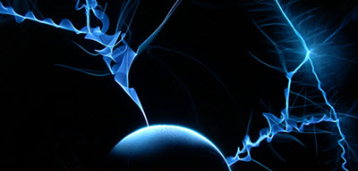
It powers our houses, lights our world and runs our computers.
But what is it?
Force
Electricity is a force.
It is one of the 4 basic forces of the Universe.
The idea behind all of electricity is:
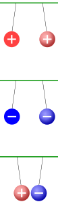
Fundamental particles can have +1 or −1 electric charge:
- + pushes + away
- − pushes − away
- + and − are pulled towards each other
We sum it up by saying:
Like charges repel, and opposites attract.
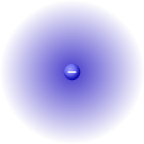
Electric charge can be felt far away (called an electric field).
In fact there is no limit, but it does get weaker the further we go.
Now let's find out more about these fundamental particles
Atoms
An atom looks like this:

Quantum Microscope Image of a Hydrogen Atom
https://dx.doi.org/10.1103/PhysRevLett.110.213001
To understand it better let's have a simple illustration (but atoms are not this neat):
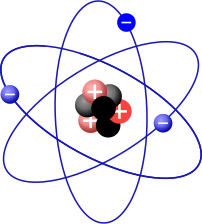
In the center are protons and neutrons, and around them dance the electrons:
- protons have an electric charge of +1
- neutrons have zero charge
- electrons have an electric charge of −1
We could swap over + and − everywhere and it would still work fine!
An atom naturally has the same number of protons and electrons, and is in balance.
But electrons can be knocked off!
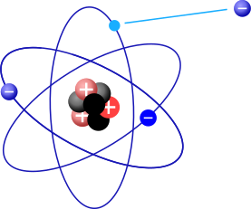
Our atom loses an electron and is now positively charged
(Try adding up the + and − left behind)
So we now have a positively charged atom, and a negatively charged electron.
We can make that happen ourselves:
Example: Rub a balloon on your hair
• Rubbing the balloon makes it pick up lots of electrons, and it becomes negatively charged.
• The hair loses electrons so becomes positively charged.
The balloon now has a lot of negative charge. And your hair has lots of positive charge.
Opposites attract, so the + is pulled towards the − and your hair stands on end!

I tried this on Arrow the Dog.
The invisible force of electric charge really did pull his hair and the balloon together.
And he seemed happy about it, too!
You may have seen or felt this yourself when a sweater clings to a T-shirt, etc.
We call this "Static Electricity" because most of the time it just sits around (static meaning not moving).
Static Discharge
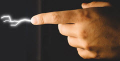
But be careful!
If you build up a big difference in charge it can suddenly bring itself back in balance with a spark.
The sudden release is called electrostatic discharge, or simply static discharge.
A dramatic example is lightning.
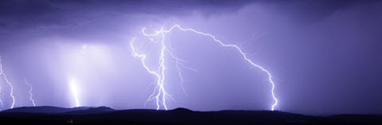
In storm clouds the charges get separated when water droplets and ice crystals are pushed around by strong winds (updrafts, downdrafts, etc). Negative charges tend to be near the bottom of the cloud:
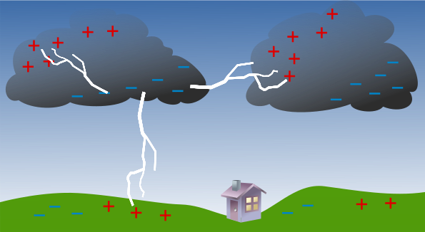
Each little charge has its little electric field, and they all add up to make massive electric fields, which can concentrate charges on the ground.
Have you ever noticed during a thunderstorm that the air feels different?
Eventually the charge difference gets large enough and *kapow* lightning!
Lightning happens between cloud and ground, but also within the cloud and between clouds:
Lightning is bright because the air gets heated up to around 50,000°C (it becomes a plasma), and the resulting shock wave causes the thunder.
If you are within a few meters the thunder goes "crack" (I have heard it twice) because it breaks the sound barrier. Further away it makes the classical bang and rumble.
Current
Static discharge (such as lightning) is violent and not very useful.
What we want is a continuous flow of electricity called a current.
It is called current because it is similar to a current of water:
But how?
Using magnets!
Electricity and magnetism are linked, and are together called electromagnetism:
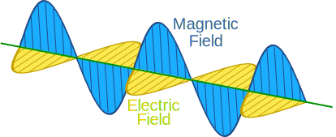
A changing magnetic field produces an electric field.
(and a changing electric field produces a magnetic field, too)
Simply moving a magnet past a wire makes electrons move along the wire (press "Move"):
Notes for the curious:
- there are really many more atoms: a short length of wire has over 1022 (10,000,000,000,000,000,000,000) atoms
- the electrical energy moves at nearly the speed of light,
- but each electron does not travel far, as it gets captured by another atom ... which may then send out another electron ... etc.
- so each electron spends most of its time in one atom or another, and can take many hours to travel just one meter
- And yes electrons tend to jump around randomly anyway, as shown
So moving a magnet past wire makes current. We have our flow of electricity!
But when the magnet stops moving, so does the current.
So how do we keep the current flowing? Rotating the wire in between magnets is a good solution:
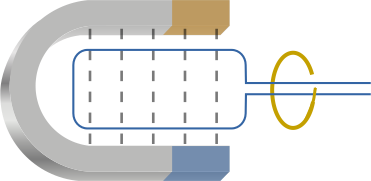
To make even more current flow we can have lots of loops of wire (called winding), and make everything huge, like this:
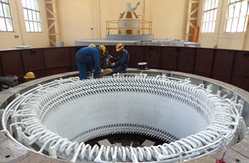
Part of a large generator
From Wikipedia user Astronomyinertia
And that is how we get large flows of electricity to power our homes and industry.
Conclusion
- Electricity is a basic force
- Static electricity is just waiting to be released
- Current electricity flows
NOW I suggest you go back to the start and read this again so it makes more sense.